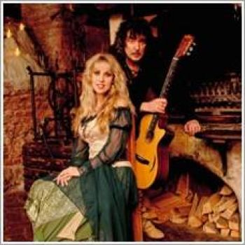

|

Blackmore's Night is a British/American traditional folk rock duo formed in 1997, consisting of Ritchie Blackmore (acoustic and electric guitar) and Candice Night (lead vocals, lyricist and multi-instrumentalist). To date they have released ten studio albums; their latest, All Our Yesterdays, was released on September 18, 2015.
Personnel, Members:
• Ritchie Blackmore - guitars, mandolin, domra, hurdy-gurdy
• Candice Night - vocals, chanter, cornamuse, shawm, rauschpfeife, tambourine
Additional Personnel:
• Bard David of Larchmont (David Baranowski) - keyboards (May 2003–Present)
• Earl Grey of Chimay (Mike Clemente) - bass, mandolin, rhythm guitar (Feb 2008–Present)
• Troubadour of Aberdeen (David Keith) - drums, percussion (2012–Present)
• Scarlet Fiddler (Claire Smith) - violin (2012–Present)
• Lady Lynn (Christina Lynn Skleros) - harmony vocals, shawm, flute, and recorder (2015-Present)
Discography:
• Shadow of the Moon (1997)
• Under a Violet Moon (1999)
• Fires at Midnight (2001)
• Ghost of a Rose (2003)
• The Village Lanterne (2006)
• Winter Carols (2006)
• Secret Voyage (2008)
• Autumn Sky (2010)
• Dancer and the Moon (2013)
• All Our Yesterdays (2015)
|